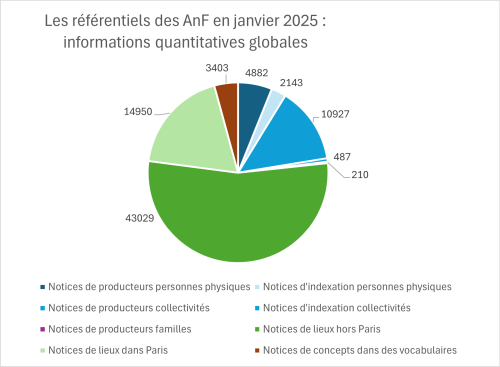

Garance est le site web de diffusion, sous la forme de graphes de données RDF, des référentiels des Archives nationales de France (AnF).
À ce jour, ces données de référence consistent en des vocabulaires d’indexation et des notices d’autorité produits collaborativement par les archivistes des AnF. Elles décrivent environ 18 700 agents, 58 000 lieux et 3 400 concepts, entités de contexte des archives conservées par l’institution. Il s’agit d’un réservoir de connaissances incomplet et imparfait mais sans équivalent, compte tenu du domaine d’intervention des AnF et de l’expertise nécessaire pour décrire ces entités.

Le Lab des AnF a réalisé en 2021 et maintient sur GitHub une version sémantisée de ces référentiels institutionnels, conformes à SKOS et à l’ontologie Records in Contexts Ontology (RiC-O). Il a publié récemment une version 2.0 de ces données (lien). Cette version résulte de la sémantisation, conformément à RiC-O 1.1 (lien) et à SKOS, de ces données de référence (dans leur état du 21 janvier 2025) et de leur enrichissement par des processus automatiques. Parmi les enrichissements notables, on peut mentionner la création d’un vocabulaire des types de lieux et l’enrichissement des référentiels de lieux.
Le système d’information des AnF, qui permet de gérer la source non RDF de ces données, ne donne pas aux usagers le moyen d’y accéder (sauf pour les notices de producteurs, interrogeables dans la salle de lecture virtuelle ou SLV (lien)), ni d’en exploiter la nature même qui est celle d’un graphe orienté. Il existe par exemple un grand nombre de relations datées et documentées entre les agents décrits, mais ces relations sont très peu visibles en SLV et n’y sont pas interrogeables.
En attendant qu’un nouveau système d’information soit conçu et réalisé, incluant des fonctionnalités de gestion et d’accès optimisées pour ces données de référence, l’objectif du projet Garance est de mettre à disposition de tous les utilisateurs une solution web d’accès à ces données, tout en explorant de nouvelles pistes de navigation, de recherche et de consultation, afin de nourrir la réflexion sur le futur SI.